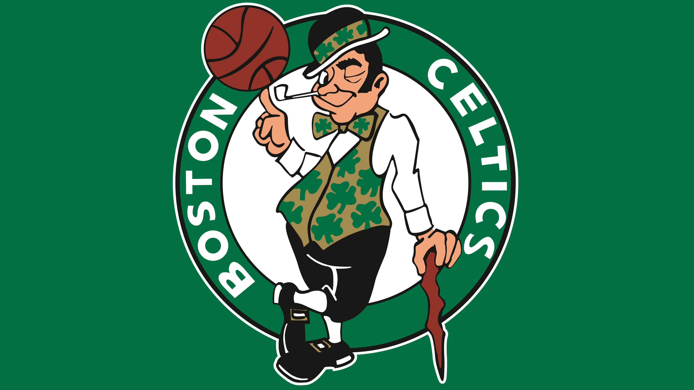
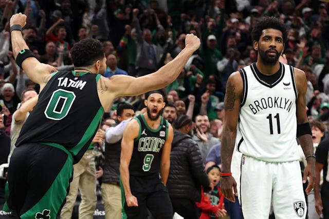
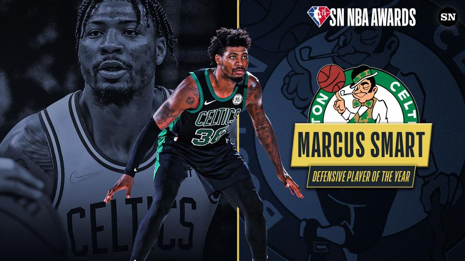
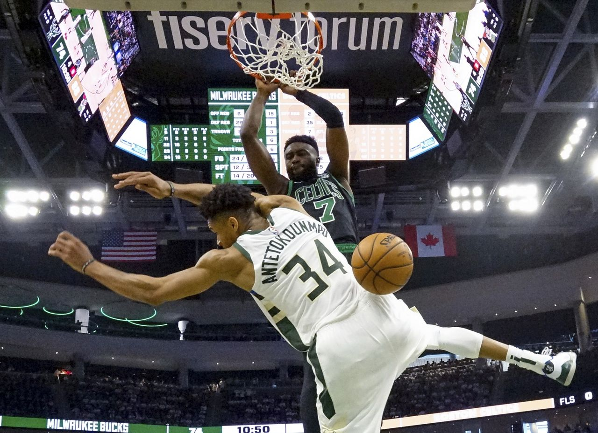
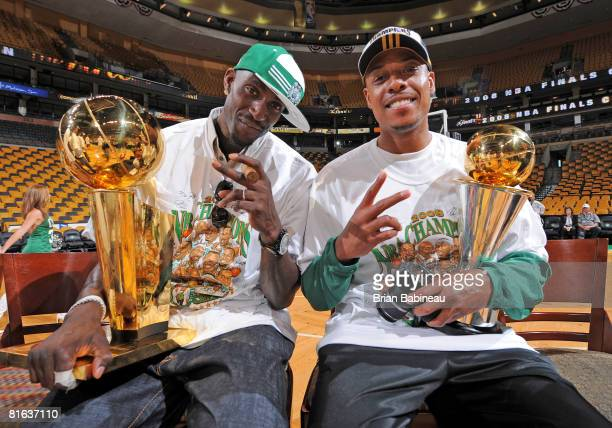

Home of the best news platform on Boston Celtics .
Welcome to the page! This is the best place to get news on the 18 time World Champions, your Boston Celtics!.
The Celtics are currenlty in the second round of the 2022 playoffs in the NBA looking to add another banner to the rafters of the TD Garden and follow in the footsteps of other Celtics legends like Paul Pierce, Larry Bird and Bill Russel.
#BleedGreen.
    The Boston Celtics finished off their first round series with the Brooklyn Nets in style
with a sweep over Kevin Durant and former Celtic, Kyrie Irving. However all was not
as easy at it seemed as Scott Foster gave Jayson Tatum his 6th foul in typical
Scott Foster fashion, rather harshly. this did set up a nerve wrecking final few minutes
of the game, but the C's did not let their lead slip up completely and finished out the
stronger of the two teams to give the team a 4-0 win over the Nets on a scoreline of 116-112.
Marcus Smart has officially been crowned the Defensive Player of the Year for the NBA,
beating out the Utah Jazz's center Rudy Gobert and the Phoenix Suns' forward Mikal Bridges.
He is the first guard to win the award since Gary Payton in 1996. Congrats Marcus,
bring on the playoffs and the Nets!.